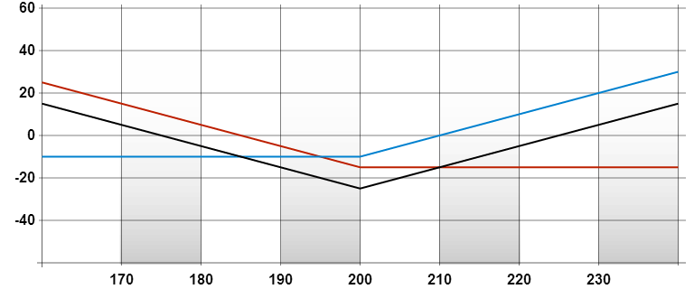

買入馬鞍式組合
返回| 策略 |
|---|
| 買入馬鞍式組合 |
| 成份 |
| 買入相同月份、相同行使價/水平的認購期權和認沽期權 |
| 潛在盈利 |
|
| 最大虧損 |
| 已付出的期權金總額 |
| 時間值影響 |
| 負面 |
| 打和點 |
|
| 備註 |
| 與利潤有限的蝴蝶式跨價短倉相比，馬鞍式組合長倉在正股低價時會有可觀的盈利，而在正股高價時則盈利無限。與勒束式組合長倉相比，建立馬鞍式組合長倉成本較高，但只需要較小的正股價/指數水平變動，已能獲利。 |
例子
盈 餘/ 虧 損 |
 |
|---|---|
| 正股價格 | |
|
| |
| 成份 |
|---|
| 買入「ABC七月200元認沽」，付出 15元，同時買入「ABC七月200元認購」，付出 10元 |
| 期權金淨額 |
| 付出 10元 + 15元 = 25元 |
| 打和點 |
|
| 錄得盈利 |
| 當正股價跌破 175元或升越 225元 |
| 潛在盈利 |
|
| 潛在虧損 |
| 25元 |
| 時間值影響 |
| 負面 |